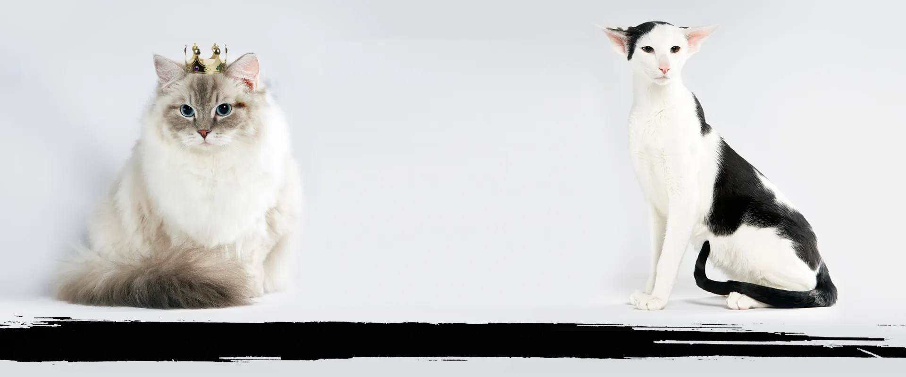
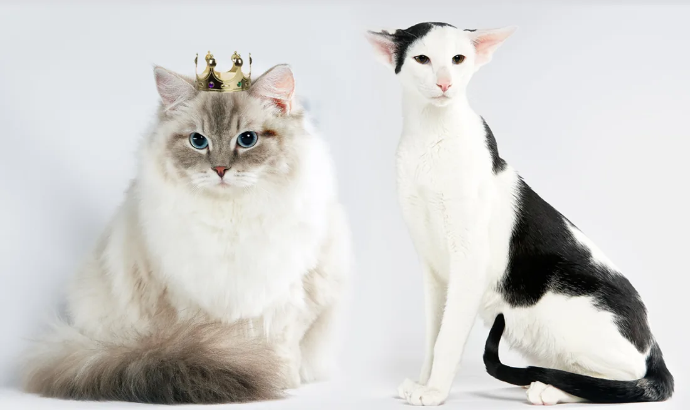
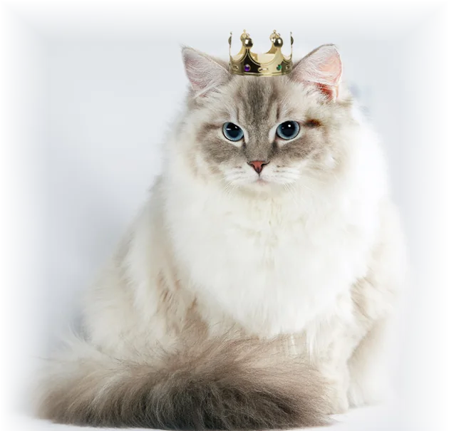

Klub kota rasowego w WarszawieHodowcy i miłośnicy kotów rasowych od 2006 roku
Członek federacji Felis Polonia i FIFe. Rejestrujemy koty i hodowle, wydajemy rodowody i organizujemy międzynarodowe wystawy kotów rasowych.

Międzynarodowe wystawy kotów rasowych
Klub organizuje w Warszawie międzynarodowe wystawy kotów rasowych z sędziami z Polski i z zagranicy. Na wystawie można porozmawiać z hodowcami o rasie, jej charakterze i pielęgnacji, zanim kot zamieszka w domu.
21-22 listopada 202665. i 66. Międzynarodowa Wystawa Kotów Rasowych
Centrum Sportu Wilanów, hala sportowa, ul. Wiertnicza 26A, Warszawa
Dla zwiedzających
- Sobota10:00-18:00
- Niedziela9:30-17:30
- Bilet30 zł, ulgowy 20 zł
- Wstęp wolnydzieci do 6 lat, osoby z niepełnosprawnością z opiekunem
Bilety do kupienia na miejscu. Na wystawie działa kiermasz z karmą, zabawkami i akcesoriami dla kotów.
Dla wystawców
Sędziowie: Daria Łukasik-Weber, Magdalena Kudra, Marcin Biernaczyk, Mirosław Skotarczyk (Polska), Charles Spijker, Alexey Shchukin (Holandia).
W sobotę Best in Show i BIS Breed MCO, w niedzielę Best in Show i BIS Breed NFO. Kontrola weterynaryjna od 7:30.
Na wystawie obowiązuje zakaz sprzedaży kociąt. Zapowiedź kolejnej wystawy, zgłoszenia i warunki weterynaryjne publikujemy w tym miejscu.
Dla hodowców
Prowadzimy sprawy hodowlane członków klubu i przekazujemy je do Biura Rodowodowego Felis Polonia. Opłatę wnosi się razem z wnioskiem.
Rejestracja kota
Kartę rejestracji kota składa się razem ze skanem lub kopią rodowodu. Rejestracja kotów w klubie jest bezpłatna.
Mioty i rodowody
Mioty kotów z bazy ksiąg rodowodowych FPL zgłasza się elektronicznie, przez kartę miotu Felis Polonia. Rodowody pięciopokoleniowe wystawia Biuro Rodowodowe FPL.
Przydomek hodowlany i nostryfikacja
We wniosku o przydomek podaje się sześć propozycji nazwy, bo zarejestrowanego przydomka nie można zmienić. Rodowód z innej organizacji niż FPL wymaga nostryfikacji.
Dokumenty do pobrania
Deklaracja członkowska, zgody RODO dla FPL i EKKR, karta rejestracji kota, wnioski o nostryfikację, przydomek i transfer. Wszystkie druki w jednym miejscu
- Rodowód pięciopokoleniowy40 zł
- Duplikat rodowodu35 zł
- Nostryfikacja, wklejka do rodowodu50 zł
- Nostryfikacja, nowy rodowód FPL i FIFe70 zł
- Transfer70 zł
- Dyplom25 zł
- Przydomek hodowlany230 zł
- Rejestracja kota w klubiebezpłatnie
- Wizytówka hodowli na stronie klububezpłatnie
Wpłaty wyłącznie na rachunek bankowy klubu, w tytule rodzaj opłaty. Pełny cennik z rozetami i przesyłką kurierską w zakładce Opłaty.
Jak zostać członkiem klubu
Zrzeszamy hodowców i miłośników kotów z całej Polski. Klub ma być miejscem życzliwym i przejrzystym w działaniu, tak jak przy jego założeniu w 2006 roku.
- Wypełnij komputerowo deklarację członkowską i podpisz ją własnoręcznie.
- Dołącz podpisane zgody na przetwarzanie danych dla Felis Polonia i dla EKKR oraz krótkie uzasadnienie: kot wybranej rasy w Twoim życiu, ścieżka hodowlana, plany wystawowe.
- Złóż dokumenty w oryginale na dyżurze klubu albo wyślij je kurierem na adres korespondencyjny.
- Opłać składkę roczną: 120 zł, dla kolejnej osoby pod tym samym adresem 50%.
Dyżur klubu
Pierwszy wtorek miesiąca, 17:00-19:00
ul. Nowolipie 18b, Warszawa
Adres korespondencyjny: Elitarny Klub Kota Rasowego, ul. Pod Borem 15/1, 05-540 Ustanów, paczkomat USA01A.
Hodowle członków klubu
Rasy według kategorii FIFe. Przy każdej rasie lista hodowli z miastem, telefonem i adresem e-mail hodowcy.
Kategoria 1
Kategoria 2

O klubie
Elitarny Klub Kota Rasowego powstał 6 czerwca 2006 roku z inicjatywy hodowców i miłośników kotów rasowych. Od 17 marca 2007 roku jest pełnoprawnym członkiem Felis Polonia, polskiej federacji należącej do FIFe.
Upowszechniamy wiedzę o kotach rasowych i domowych, dbamy o polskie linie hodowlane, organizujemy wystawy i doradzamy w hodowli.
- PrezesMarek Chadaj
- Wiceprezes ds. finansowychIreneusz Bożykowski-Hejcelman
- Sekretarz generalnyBeata Zdaniak
- Członkowie zarząduAnna Grabowiec, Ilona Senderek-Wójcik
Kontakt
- Sprawy hodowlane: rodowody, karty miotów, nostryfikacje
- 535 225 103
Beata Zdaniak, wtorki 17:00-19:00 - Sprawy finansowe: składki, stoiska, sponsorzy
- 790 004 535
Ireneusz Bożykowski, czwartki 17:00-19:00 - klub.ekkr@gmail.com
- Siedziba i dyżur
- ul. Nowolipie 18b, 01-005 Warszawa
pierwszy wtorek miesiąca, 17:00-19:00 - Dane stowarzyszenia
- KRS 0000272789, NIP 527-254-97-77, REGON 140856385